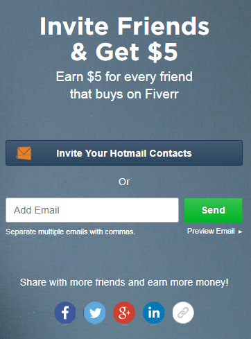

Compiti a pagamento
Clicca sulle immagini per ulteriori informazioni.


Clicca sulle immagini per ulteriori informazioni.
In Fiverr hai tre modi per ritirare i tuoi guadagni, il primo è attraverso un conto PayPal che dovrà passare attraverso un processo di verifica e verificare che sia veramente il tuo account, in questo modo esiste un importo minimo di ritiro, un altro Questa forma è tramite la carta di entrata di Fiverr, guidata da MasterCard e richiede un importo minimo di USD 5 per il ritiro, la terza forma è tramite un bonifico bancario per il quale non viene menzionato alcun importo minimo nella web di Fiverr.

Per ritirare le tue vincite, devi andare alle vendite oppure
Fiverr gestisce un sistema di rinvii con i quali è possibile aumentare facilmente i tuoi profitti, per accedere al sistema di referenze devi fare clic sull'immagine del tuo profilo che appare a destra della pagina e selezionare l'opzione che vedi in colore verde
 |
 |
Una volta aperto il modulo di riferimento, puoi condividere il tuo link in diversi modi: inviandolo ai tuoi contatti di posta elettronica, inviandolo a determinati destinatari o distribuendolo tramite reti sociali. Una volta che uno dei tuoi amici registra e fa un acquisto sul web riceverai 5 USD.
Posso utilizzare qualsiasi metodo di pagamento per ogni ritiro?
No, per tutti i ritiri che fai, devi utilizzare lo stesso metodo di pagamento per motivi di sicurezza, quindi scegliere bene per il primo pagamento, poiché lo stesso metodo deve essere utilizzato per ogni volta che desideri ritirare le tue vincite.
Dovrei avere studi o certificati per offrire tutti i servizi?
No, a Fiverr non devi essere un professionista o avere un certificato per il servizio o il prodotto che offri, se non li hai, non ti preoccupare, quello che offri può essere un talento o uno dei tuoi hobby.
Quanti servizi posso offrire?
Il numero massimo di servizi o concerti che puoi offrire è di 20, tutto dipende dalla tua disponibilità, ricorda che più velocemente ti consegnerà quello che ti è stato affidato il più soddisfatto che il compratore rimarrà e la tua qualifica sarà migliore.
Qual è il prezzo minimo e massimo che posso caricare in Fiverr?
Molti dei concerti hanno il prezzo minimo di 5 USD, ma alcuni, a seconda della difficoltà e della qualità del prodotto o del servizio, variano al prezzo, la maggior parte non supera i 50 USD, può costare 10, 15, 20 o 25 dollari; tutti i prezzi, la tecnologia oi lavori di programmazione sono solitamente i più costosi, raggiungendo il prezzo massimo che può essere addebitato in Fiverr, 1000 USD.
Ogni volta che il mio richiamo effettua un acquisto, Fiverr mi dà 5 USD?
Purtroppo no, Fiverr paga solo $ 5 per la prima volta che il tuo referral effettua un acquisto, che ti motiverà ulteriormente per avere molti riferimenti e ottenere sempre più profitti.
Non ho conto PayPal
Nessun problema, la prima cosa che devi fare è andare alla pagina PayPal, non forniamo il collegamento per la tua sicurezza, una volta lì, in alto troverai le seguenti opzioni:

Qui, dopo aver fatto clic su
Più tardi ti verrà chiesto il tuo genere e i tuoi gusti e poi i tuoi dati personali e alla fine ti chiederanno se vuoi associare la tua carta bancaria, potendo rinviare se vuoi farlo facendo clic su